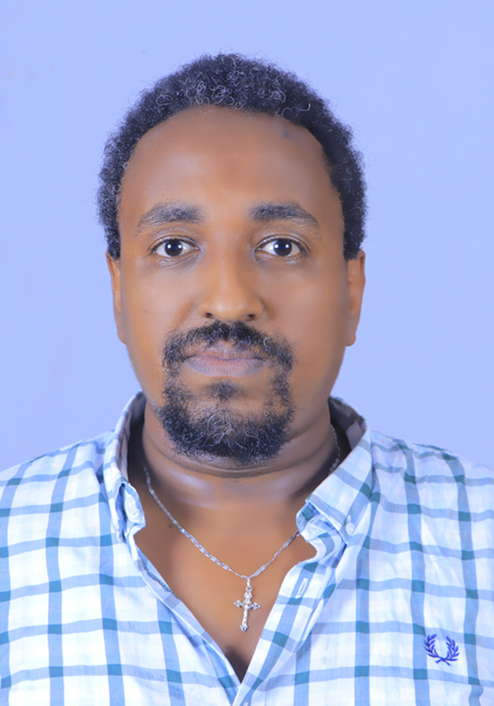

Website Development
Modern, responsive websites that communicate your value and work smoothly across desktop and mobile.
Design-aware · Mobile-firstAvailable for freelance projects
I’m Dawit Mamo, a developer and electronics engineer helping ambitious people turn ideas into clear, useful, and reliable digital experiences.

How I can help
Flexible support for individuals, small businesses, teams, and academic projects.
Modern, responsive websites that communicate your value and work smoothly across desktop and mobile.
Design-aware · Mobile-firstPractical application interfaces, dashboards, APIs, and database-backed workflows tailored to your needs.
Frontend · Backend · DataSupport for Python tools, computer-vision concepts, embedded systems, and early-stage technical ideas.
Prototype · Test · ImproveSelected work
An academic web platform concept for sharing STEM programs, activities, events, and project showcases.
View repository ↗Simulation-based investigation of load-aware data dissemination and traffic congestion mitigation in vehicular networks.
Explore GitHub ↗A Raspberry Pi and computer-vision project concept exploring camera-based driver alertness monitoring.
Explore GitHub ↗Your next project
Tell me what you’re trying to achieve. We can discuss scope, approach, and next steps.
Start a conversation ↗My approach combines engineering discipline with a focus on the people who will use the end result.
With a background in Electronics and Communication Engineering and Systems and Signal Processing, I bring curiosity and structured problem-solving to software, AI, and technical projects. I also work in STEM education, where communicating complex ideas clearly is part of the job.
I value realistic scope, regular updates, maintainable solutions, and honest collaboration. I want clients to understand what is being built, why it matters, and what comes next.
Tools of the trade
A working toolkit across web, data, AI, and engineering.
Have a project in mind?
Share a little about your goals, timeline, and the problem you want to solve. I’ll get back to you by email.